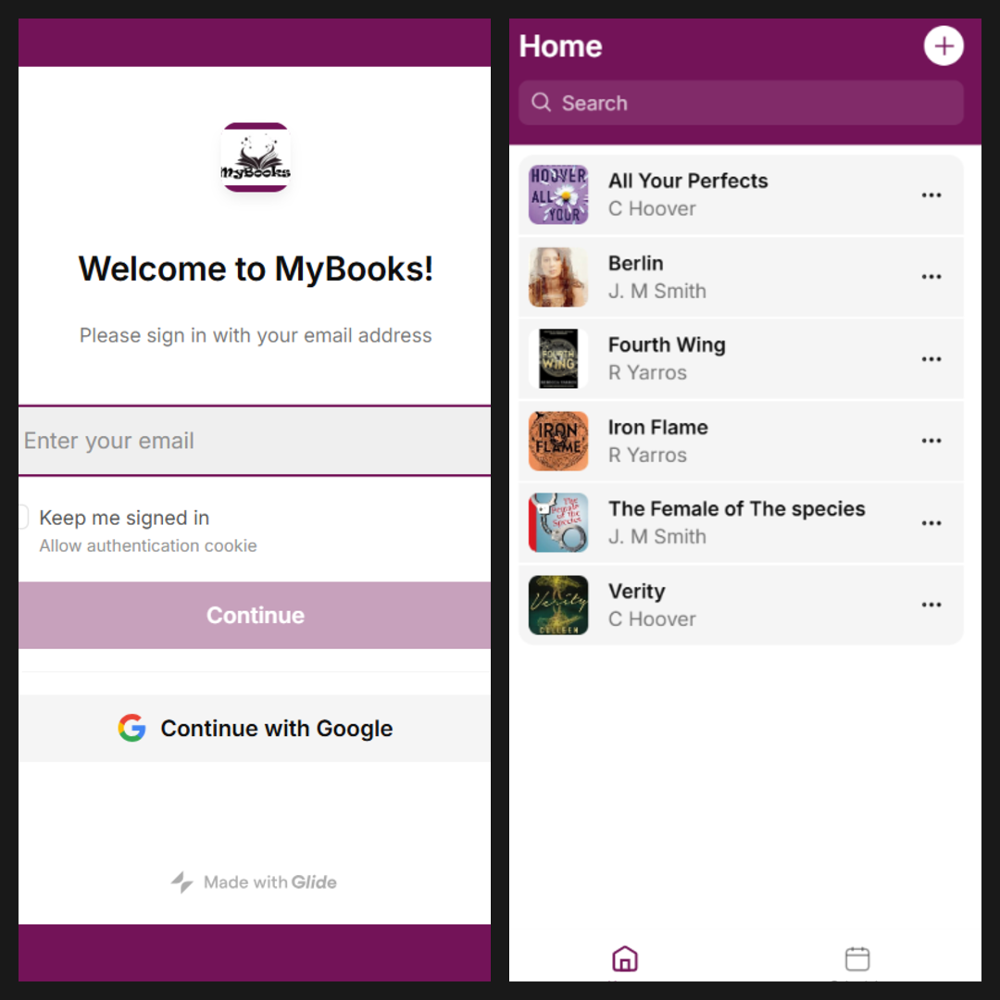

My Books App
Description:
The Books App is a basic, easy-to-use application for managing and tracking reading habits. It was created using no-code tools and allows users to log books they've read, track progress, and manage their personal library all in one spot. It's excellent for readers who seek a simple, mobile-friendly solution to stay motivated and consistent in their reading.
Technologies Used:
- Glide (no-code platform)
- Google Sheets (Data storage)
- Basic design customization tools
Key Features:
- user-friendly login and onboarding
- Add, edit, or remove books from your library
- Review your read book, set your favorites, Schedule your next read.
- Mobile-responsive interface